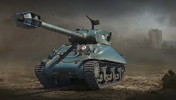
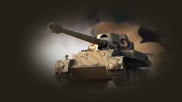
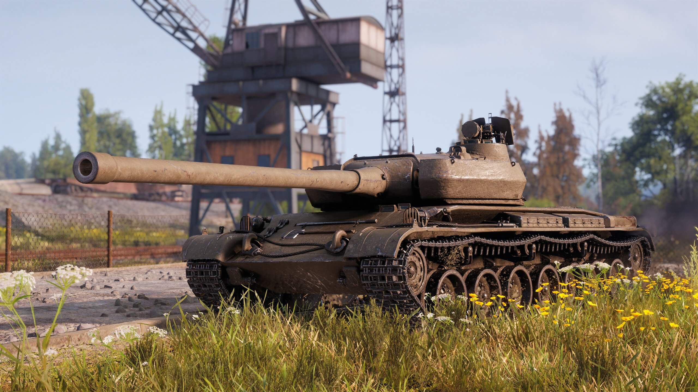

посилання на преміум магазин гри

"M51" преміум танк 8 рівня
Вартість 9 440 золота.
Тип танку: Середній танк підтримки
Разова шкода од.: 390/390/450 од.
Бронепробиття: 200/250/53 мм (Бронепробиття на 500м: 192/250/53 мм)
Міцність: 1400 од.
Максимальна швидкість: 43/16 (вперед/назад) км\ч
Дальність огляду: 390 м.
Радіус замітності: 376.67/358.1 (в русі/в нерухомому стані) м.
Урон в хвилину: 1903~ од.
Час перезаряджання: 12.3
Початкова швидкість снарядів: 1460/980/700 м/с.
Тип снарядів: БП/КС/ОФ.
Точність: 0.35
УВН: 10/15 (вниз/верх)
Дальність зв'язку: 750м.
Коротко про башту
Бронювання башти: 64/64/64 мм.
Швидкість повороту: 44 град\с
коротко про двигун
Потужність двигуна: 460 К. С.
Можливість пожежі: 15%.
коротко про ходову
Швидкість повороту: 48 град\с.
опір грунту: 0.6/0.7/1.5

"Skorpion G" Преміум танк 8 рівня
Вартість 410 грн.
Тип танку: ПТ-САУ, снайперська.
Разова шкода: 490 / 490 / 630 од.
Бронепробиття: 246 / 311 / 65 мм
Час перезарядки гармати: 12,20 с.
Скорострільність: 4,92 постр/хв.
Урон в хвилину: ~2 410 од/хв.
Час зведення: 2,10 с.
Роскид на 100м: 0,30 м
Боєзапас: 30 шт.
Живучість
Міцність: 1150 од.
Бронювання корпусу: 30 / 16 / 20 мм.
Витривалість
Маса/Максимальна маса: 38,23 / 45 т.
Потужність двигуна: 650 к.с.
Придільна потужність: 17 к.с./т
Максимальна швидкість: 60/15 км/год
Швидкість повороту: 30 град/с.
Швидкість повороту башти: 18 град/с.
Спостереження
Огляд: 360м.
Дальність зв'язку: 700м

"Škoda T 56" Преміум танк 8 рівня
Вартість 490 грн.
Тип танку: Важкий танк прориву
Урон: 460 / 460 / 640 од.
Бронепробиття: 208 / 248 / 68 мм.
Скорострільність: 4,21 постр/хв.
Урон в хвилину: 1 937 од/хв.
Час наведення: 3 с.
Роскид на 100м: 0,42 м.
Боєзапас: 30 шт.
Снарядів у барабані: 2 шт.
Час перезаряджання барабану: 25 с.
Час зміни снаряду в барабані: 3.5 с
Живучість
Міцність: 1500 од.
Бронювання корпусу: 100 / 70 / 70 мм.
Бронювання башти: 220 / 95 / 70 мм.
Витривалість
Маса/Максимальна: 48 / 50.
Потужність двигуна: 650 к.с.
Удільна швидкість: 13,54 к.с./т.
Максимальна швидкість: 35 км/год.
Швидкість повороту: 26 град/с.
Швидкість повороту башти: 26 град/с.
Спостереження
Огляд: 370м.
Дальність зв'язку: 830м.